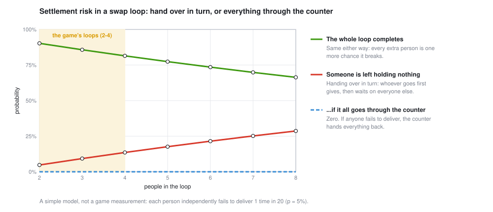

Before every spin, everything on the market goes onto a folding counter. When the drum stops, the counter hands every chosen trade over at once, or not at all. That isn't fussiness. It's the fix for settlement risk, the danger that once took down a bank in an afternoon.
Take a 3-way loop from night 1. Upddayett gives Shopping-Cart Guy a 12-pack of Mtn Goo, Shopping-Cart Guy gives Bike Kitchen Dave a 350 W scooter hub motor, and Dave gives Upddayett a soldering iron. Everyone comes out ahead, if everyone delivers.
Now do it without a counter, one hand-off at a time. Somebody has to go first. Upddayett hands over the Mtn Goo, then waits. If anyone down the line changes their mind, walks off or just doesn't show, Upddayett has given something and got nothing. Everyone who goes later is protected, because they receive before they give. All the risk lands on whoever goes first, and it grows with every person they're waiting on.

The counter doesn't make people more reliable. The chance the whole loop completes is the same either way. What it removes is the bad failure: when someone doesn't deliver, the trade is called off and everyone gets their own things back.
Step 4 is reconciliation: the books must balance before anything is final. It's settle in src/trade/escrow.rs, about a hundred lines. In the game you'll see it as a line after every spin: "The counter held all 17 items through the spin, then 8 changed hands in 3 trades and 1 gift."
While the drum spins, nothing on the counter can be used for anything else. In markets this is real money: collateral and margin sit idle so that trades can settle safely. In the game, when Upddayett runs the drum on Vape Lady's battery cells to survive a power cut, those cells can't be traded that night. Safety is never free.
On 26 June 1974, German regulators closed Bankhaus Herstatt in Cologne at the end of the German business day. That morning, banks trading currencies with Herstatt had paid it Deutsche Marks in Germany. The US dollars Herstatt owed them in return were due in New York, hours later, and they never came. Those banks had gone first and got nothing back.
The risk that one side of a trade settles and the other doesn't is still called Herstatt risk. The industry's fixes are the counter, scaled up:
Even with the counter, a loop only completes if everyone in it delivers. At 1 failure in 20 per person, a 2-way swap completes 90% of the time and an 8-way loop 66%. A long loop fails often, and when it fails, everyone in it misses out. So the game's machine only considers loops of 2 to 4 people.
Kidney exchange faces the same trade-off with much higher stakes. A patient whose willing donor doesn't match swaps donors with another pair. In a loop, all the surgeries happen at once, so no donor gives a kidney before their own patient has received one. That takes several operating rooms and surgical teams at the same moment, so exchanges keep loops short, usually 2 or 3 pairs.
Chains get around the limit by starting with an altruistic donor, someone who gives without needing anything back. Each pair's donor then gives only after their own patient has received, so nobody ever goes first with something to lose, and the surgeries can happen days apart (Rees et al., New England Journal of Medicine, 2009). It's the same trick as the counter: arrange things so nobody hands over before getting theirs.
# this lesson's figure (a model; the formulas are in the code)
cargo run --release --example machine_figs -- settle
# the game: the counter's line appears on the trade board after every spin
cargo run --release
# the counter's own tests: every item conserved, a clash called off whole
cargo test --release --lib -- the_counter a_clashEach of 4 people fails to deliver with probability 5%. What's the chance the loop completes? Handing over in turn, what's the chance the first person is left holding nothing?
Completes: 0.954 ≈ 81.5%. The first person loses if they deliver (95%) and any of the other three doesn't (1 − 0.953 ≈ 14.3%): 0.95 × 0.143 ≈ 13.5%.
Without a counter, who should go first in a loop, and why does a kidney chain start with an altruistic donor?
Whoever has the least to lose by not being paid back. An altruistic donor wants nothing in return, so they lose nothing if the chain breaks after them. Every later donor gives only after their own patient has received.
Two trades the i9 called both need Vape Lady's battery cells. One is worth 7 Goo, the other 5. What does the counter do?
The 7-Goo trade claims the cells first and is carried out. The 5-Goo trade is called off whole: everyone in it keeps their own things, and nobody is left half-traded.
A clearing house protects traders from each other. What new risk does it create?
It concentrates risk: if the clearing house itself fails, everyone is exposed at once. That's why clearing houses are tightly regulated and hold large pools of collateral, and why the counter in the game checks its own books after every spin.